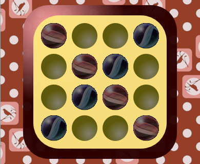
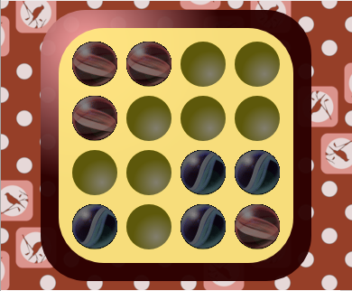

Celem gry Dao jest bycie pierwszym z graczy który przesunie swoje 4 piony na którąś z pozycji wygrywających.
Podczas ruchu, gracz może wykonać ruch każdym ze swoich pionów. Ruch polega na przesunięciu piona w poziomie, w pionie lub na skos. Przesunięcie musi zostać wykonane w danym kierunku aż do napotkania przez dany pion przeszkody. Przeszkodą może być koniec planszy lub pion innego gracza. Zabronione jest przeskakiwanie pionów przeciwnika tudzież ruch w niedozwolonym kierunku.
Na początek rozmieszczamy na planszy 8 pionów tak jak na rysunku poniżej. Następnie decydujemy którymi pionkami będziemy
grać oraz kto rozpocznie rozgrywkę.

Po powyższych ustaleniach można przystąpić do gry. Zaczynający gracz wykonuje dokładnie jeden ruch dokładnie jednym pionem. Następnie ruch wykonuje gracz przeciwny. Naprzemienne ruchy powtarzają się tak długo aż któryś z graczy osiągnie pozycję wygrywającą lub pozycję przegrywającą.
W grze dao wyróżniamy 18 różnych stanów wygrywających:
O pozyji przegrywającej mówimy wtedy, gdy któryś z graczy przy użyciu trzech swoich pionów zablokuje pion przeciwnika w narożniku. Tak
oto na ilustracji poniżej gracz niebieski zablokował w prawym dolnym narożniku gracza czerwonego przez co przegrał.
